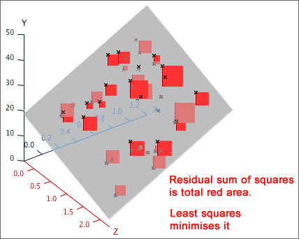
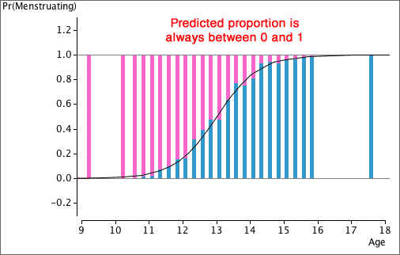
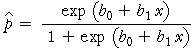

If you don't want to print now,
Three or more variables
We previously described the relationship between two numerical variables, X and Y.
In many applications, more than two measurements are made from each individual and the additional variables may throw light on the relationship.
Use of this extra information may lead to more accurate predictions of Y.
Distinguishing groups in a scatterplot
We now consider how a categorical variable, Z, can help explain the relationship between two numerical variables, X and Y. It equivalently examines whether the relationship between X and Y is the same in each of several groups.
As in most other situations, data analysis should start by examining the data graphically. Differences between the groups can be shown with different symbols and/or colours for the crosses in a scatterplot of Y against X.
Least squares in each group
We can separately examine the relationship between X and Y in each group (or equivalently for each value of a categorical variable, Z). If the relationship between X and Y is different in the different groups, this should lead to more accurate predictions of Y from X.
A regression line can be separately fitted by least squares in each group.

Separate regression lines
The problem with fitting separate regression lines by least squares in the different groups is that it is difficult to concisely explain the difference between the groups — the difference between the predicted response in the groups depends on the value of the explanatory variable.

Parallel regression lines
Interpretation is considerably simplified if we constrain the regression lines for the different groups to have the same slope. In the diagram below, the difference between the groups is the same for all values of X.

Parallel lines are not appropriate descriptions of all data sets. Always check a scatterplot first.
Least squares
The principle behind fitting parallel lines to two or more groups is the same as in ordinary simple regression — we choose the parameters to minimise the sum of squared residuals (vertical distances between the data crosses and their corresponding line). The resulting formulae are complicated, but most statistical software will do the calculations for you.
Transformation of the response
It is much easier to interpret the parameters when parallel lines are fitted to different groups than when their slopes are different, but the data or the context may not justify such a simplification.

After a nonlinear transformation of the response, the relationships in the two groups may be closer to parallel. A transformation to reduce skewness in the reponse often works well.

Understanding the model for ln(y)
Logarithmic transformations are particularly useful because the parallel least squares lines have a simple interpretation. For the above data they are:
Female: ln (y) = 0.391 + 0.0747 x
Male: ln (y) = 1.192 + 0.0747 x
This means that:
ln(y) is (1.192 - 0.391) = 0.801 higher for females than for males with the same x.
We can now concisely summarise the difference between males and females:
y for females is e0.810 = 2.23 times that for males with the same x.
Definition of groups
A categorical variable naturally splits the individuals into groups, but a numerical variable, Z, can also be used to define groups.

Distinguishing groups in a scatterplot matrix
A scatterplot matrix can help to describe the relationships between 3 or more numerical variables. If each individual belongs to one of several known groups, different symbols or colours can be used to distinguish the groups.

Response and explanatory variables
We are often interested in how a 'response' variable, Y, depends on other explanatory variables. If there is a single explanatory variable, X, we can predict Y from X with a simple linear model of the form,
y = b0 + b1 x
However if other explanatory variables have been recorded from each individual, we should be able to use them to predict the response more accurately.
Adding extra variables
A simple linear model for a single explanatory variable,
y = b0 + b1 x
can be easily extended to describe the effect of a second explanatory variable, Z, with an extra linear term,
y = b0 + b1 x + b2 z
and so on with more explanatory variables,
y = b0 + b1 x + b2 z + b3 w + ...
This type of model is called a multiple regression model.
Coefficients
Despite our use of the same symbols (b0, b1, ...) for all three models above, their 'best' values are often different for the different models. An example will be given in the next page.
Marginal and conditional relationships
In a linear model that predicts a response from several explanatory variables, the least squares coefficient associated with any explanatory variable describes its effect on the response if all other variables are held constant. This is also called the variable's conditional effect on the response.
This may be very different from the size and even the sign of the coefficient when a linear model is fitted with only that single explanatory variable. This simple linear model describes the marginal relationship between the response and that variable.
Example
In a model for predicting the percentage body fat of men, the best model (as determined by least squares) in a simple model with weight, is
Predicted body fat = -10.00 + 0.162 Weight
However if we add Abdomen circumference to the model, the best values for the coefficients are
Predicted body fat = -41.35 - 0.136 Weight + 0.915 Abdomen
Goal of small residuals
When fitting a model to data, the fitted values are unlikely to match exactly the observed response values and the prediction 'errors' are the residuals,
ei = yi − 
'Small' residuals are desirable.
Least squares
The size of the residuals is described by their sum of squares,
SSResidual 

The least squares estimates of b0, b1 and b2 are the values that minimise this.

The solution can be obtained algebraically but the formulae are relatively complex and a computer should be used to evaluate the least squares estimates.
Comparing the response distributions at different x-values
If a response, Y, is numerical and explanatory variable, X, is categorical, box plots can be used to compare the response distribution at the different x-values.

If the response, Y, is categorical and the explanatory variable, X, is numerical, we are again interested in comparing the response distribution at different x-values. We might use X to define 'groups' by splitting its values into classes (as might be done to draw a histogram) and this allows us to use stacked bar charts to describe the relationship.

It is not necessary for the 'classes' to be of equal width. For example, some of the age groups below are of width 3 months, whereas others are 6 months and the extreme classes are wider still.

Linear model
It is tempting to try a linear model to explain how the proportion in one response category is affected by the explanatory variable,
predicted proportion, 
Unfortunately this may result in predicted proportions greater than 1 or less than 0.

Nonlinear models
We should use a model that gives values between 0 and 1 for all possible values of X. This means that the equation must be nonlinear in X.

A curve that lies between 0 and 1 for all values of x
Various nonlinear equations have values between 0 and 1 for all values of x, but the simplest of these is a logistic curve,
predicted proportion, 
The parameters of the logistic curve
The parameter b1 is called the slope of the curve. Increasing it makes the curve steeper, and its sign determines whether the curve slopes upwards or downwards.

The parameter b0 is the curve's intercept and it determines the horizontal position of the curve. Increasing it shifts the curve to the left.

Estimating the logistic parameters
Estimating the parameters b0 and b1 of a logistic model is more difficult than estimating the parameters for a linear model by least squares, but many statistical programs will do the appropriate calculations for you.
We therefore take a 'black box' approach and simply show what parameter estimation gives without further justification.